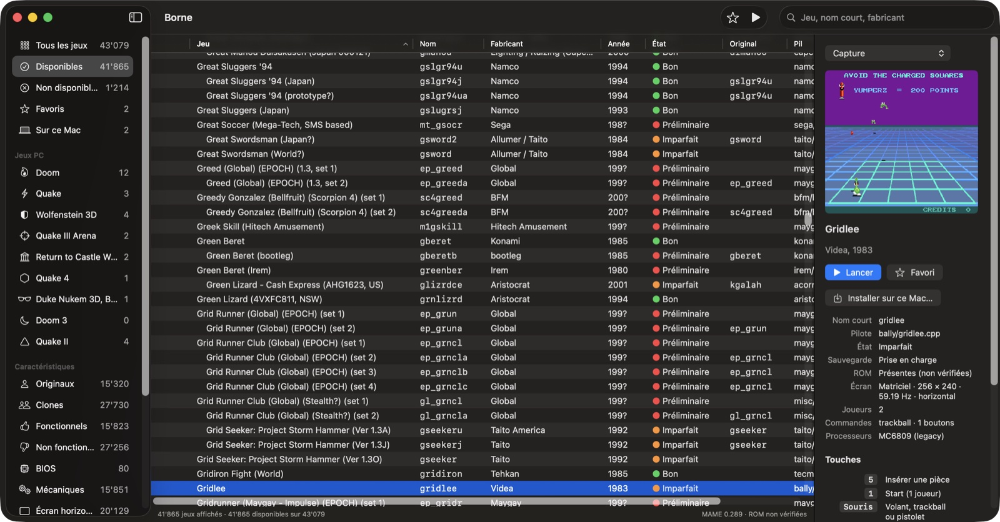
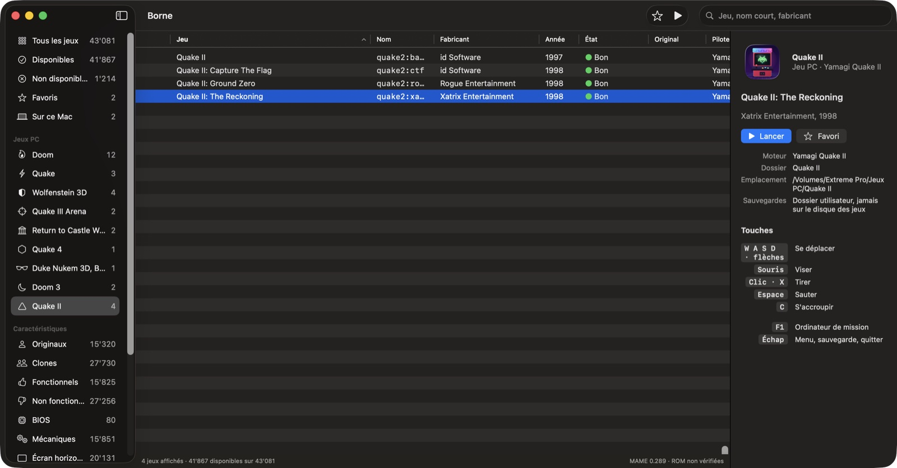

Borne
Your arcade room, and the PC classics, neatly arranged on your Mac.
There are the games we grew up with: the clink of coins in the slot, the first Doom deathmatches, late nights in Quake. Nearly all of them still live on, thanks to emulators and open-source engines of remarkable fidelity.
But on the Mac you drive them from the command line, each with its own folders and settings, and the nice front ends stayed on Windows. A collection of 40,000 machines and a score of PC games deserves better than a terminal.
Borne gives you the room back: your games organized, found in an instant, launched with a double-click.

How it works
- Show Borne where your games are. Your arcade ROM folder and your PC games folder, on an external drive if you like. Borne only reads them and never writes anything there.
- Browse. Available, favorites, manufacturer, year, vertical screen, Doom, Quake… and a search that follows your typing.
- Play. Double-click. A reminder shows the game's keys; Esc brings you back to Borne.
What Borne does
The whole arcade
MAME 0.289 is inside the app: more than 43,000 machines, sorted, filtered and searched without the window ever freezing. One game, or all your favorites, can be installed on the Mac to play without the external drive.
The PC classics
Doom, Quake, Quake II, Quake III, Doom 3, Quake 4, Wolfenstein, Duke Nukem 3D, Blood… Borne finds your game files, groups each add-on with its game and launches the right modern engine.
Your games stay untouched
The games drive is read-only. Settings, saves, high scores and screenshots go to your user folder, and a messed-up display setting is reset with one click.

Questions
Does Borne include any games?
No, none. Borne, MAME and the engines are software; arcade ROMs and PC game files are up to you. Only use those you are entitled to. For Doom, Freedoom, an entirely free game, downloads in one click.
Is it really free?
Yes. Borne is free software under the GPL-3.0; its code is on GitHub and anyone can contribute. If you enjoy it, you can support it with a donation.
What about Intel Macs?
Yes: there is an Intel version, native too. Pick the button that matches your Mac; macOS 14 or later is required.
Is Borne part of the MAME project?
No. Borne is an independent project that bundles MAME, unmodified, under its license. MAME is a registered trademark of Gregory Ember.